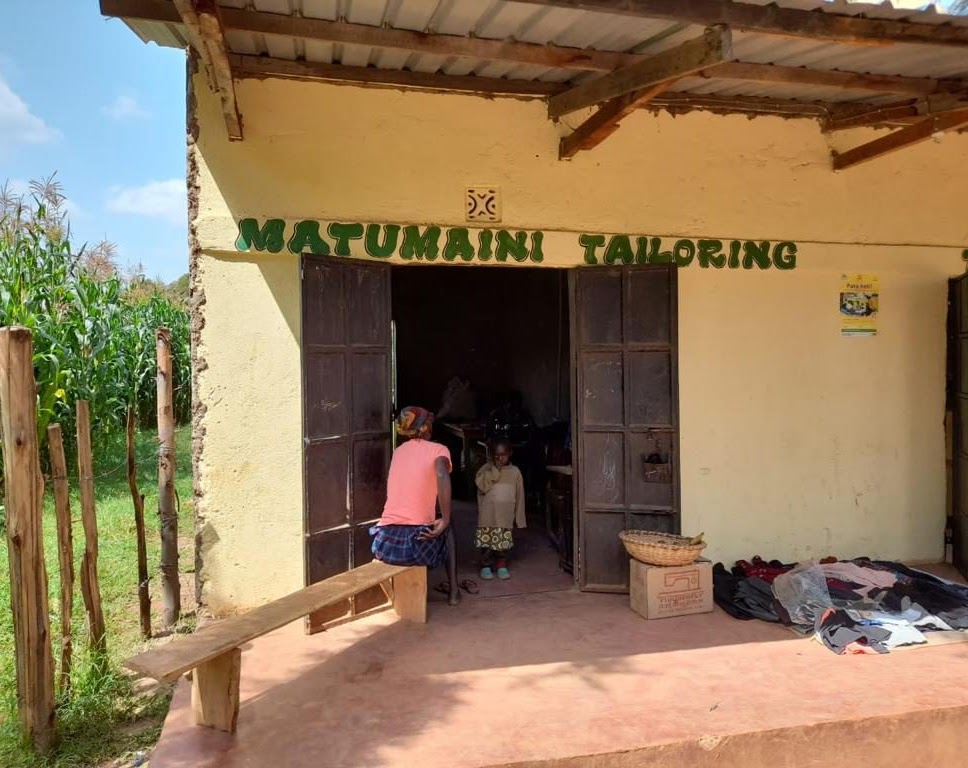

Project Naaimachine
Hoe breng je hoop in een uitzichtloze situatie? Soms is een naaimachine voldoende. In ons naaiatelier in Kiminini, sinds 2025 zelfvoorzienend, wordt kleding gemaakt, waaronder schooluniformen zodat kinderen naar school kunnen.